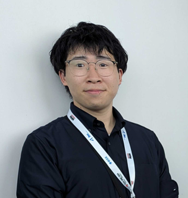

所属
学歴
研究業績
委員歴
受賞歴
所有車両
お問い合わせ

河上 響 / Uta Kawakami
所属 / Affiliation
国立大学法人 電気通信大学
情報理工学研究科 機械知能システム学専攻 博士前期課程 (Apr. 2024-)
OOEDO SAMURAI
RoboMaster Project (May 2022-)
RM25: キャプテン, ソフト班
学歴 / Education
国立大学法人 電気通信大学 情報理工学域Ⅱ類 計測・制御システムプログラム 卒業 (Apr.2022-Mar. 2024)
独立行政法人 国立高等専門学校機構 香川高等専門学校 電子システム工学科 卒業 (Apr. 2017-Mar. 2022)
研究業績 / Publications
著書 / Book
(
0
)
なし
論文 / Paper
(
0
)
Uta Kawakami
, Kenji Sawada, Quantifying Trade-Offs in Autonomous Driving with a DRL-Based Multi-Objective Control System via the SVC,
Journal of Robotics and Mechatronics
, Vol.37, No.5, ???/??? (2025.10)（2025年4月3日採択）
Click to copy BibTeX
国際学会発表 / International Conference
(
0
)
Uta Kawakami
, Kenji Sawada: Steering Control Considering Motion Sickness and Vehicle Performance via DDPG Algorithm and 6-DoF-SVC Model,
IEEE International Conference on Systems, Man, and Cybernetics
, 6-10, Oct. 2024 (In-person, Poster, Full Paper Review)
Click to copy BibTeX
N Iwamoto, Y. Misaki, T. Takechi, R. Ozaki,
U. Kawakami
, F. Hayashi, and K. Fukuta, A Power Transmission Line Inspection Robot and an AI-Based Anomaly Detection System, Invited talk,
Workshop on Future Computing 2019
, Dec. 16-17, 2019.
Click to copy BibTeX
国内学会発表 / Domestic Conference
(
0
)
河上響
, 澤田賢治：強化学習を用いた速度計画生成アルゴリズムの動揺病および車両性能の評価, 計測自動制御学会 第11回制御部門マルチシンポジウム, 3M6-4, 2024.03.17-20, 対面開催
Click to copy BibTeX
河上響
, 澤⽥賢治：強化学習を⽤いた燃費および乗り⼼地の改善 , 2023年度計測自動制御学会関西支部・システム制御情報学会シンポジウム, C1-2, 2024.01.12, 対面開催
Click to copy BibTeX
河上響
, 村上和也, 菅哲朗, 小泉直也, 新竹純：視覚刺激と触覚刺激による感情制御の実現可能性の研究, ロボティクス・メカトロニクス講演会2023, 2A1-I05, 2023.06.28-07.01
Click to copy BibTeX
陶國多聞，境直人，
河上響
，尾崎玲音，伊藤翼，岩本直也，三﨑幸典，秋月拓磨，日根恭子，中内茂樹:“深層学習を用いた果物・野菜小型選果装置の実用化” , ATS2021：2021 年度先進的技術シンポジウム(豊橋技術科学大学)，課題番号 3103, 2022 年 3 月 8 日
Click to copy BibTeX
岩本直也, 三崎幸典, 武智大河, 尾崎玲音,
河上響
, 林文博, 福田和秀：点検ロボットと物体検出モデルを用いた架空地線の異常検出, 令和2年電気学会全国大会講演論文集2020, 2020.03.01
Click to copy BibTeX
岩本直也, 須藤陽輝,
河上響
, 尾崎玲音, 三﨑幸典：深層学習を用いた送電線の異常検出手法の検討, 電気学会電力・エネルギー部門大会論文集2019, 2019.09.03-09.06
Click to copy BibTeX
委員歴 / Committee Memberships
Reviewer, Paper Review Committee, 2024 IEEE International Conference on Systems, Man, and Cybernetics
受賞歴 / Awards
The RoboMaster University Championship 2024 (Aug. 2024)
Position: Vice Captain, Treasurer, Software Section, and Hero Robot Operator
Regional Competition: Second Prize
Final Tournament: Third Prize
第34回アイデア対決・全国高等専門学校ロボットコンテスト2021全国大会
アイデア賞・文部科学大臣賞 (Nov. 2021)
第32回アイデア対決・全国高等専門学校ロボットコンテスト2019全国大会
優勝・内閣総理大臣賞(Nov. 2019)
全国高等専門学校ディープラーニングコンテスト2019 準優勝・企業評価額3億円(Apr. 2019)
お問い合わせ / Contact
ご質問や連絡事項がある場合は、XのDMまたは以下のメールアドレスにご連絡ください。
Back to Top